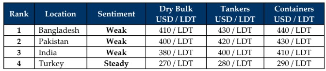

GMS Week 52 – AU REVOIR, 2025!
in Weekly Demolition Reports 29/12/2025

A turbulent 2025 — not only for the ship recycling industry, but for global economies churning under the weight of tariffs, tantrums, and tumultuous international situations — finally comes to a close, there were certainly some positive highlights to note as remarkable progress on HKC infrastructure upgrades has been carried out across the entire Indian sub-continent ship recycling industry right before the year-end — a leaving a positive mark for the ship recycling industry and certainly a welcome sign for 2026.
Yet, the glaring fact remains that prices are far poorer than the USD 600/ton highs of January 2024, driven by consistently declining steel plate prices across the Indian sub-continent markets, coupled with incredible volatility in global currencies/foreign exchange trading, never-ending political events, and a touch of monsoon rainstorms that even brought the weather into the mix. As such, markets continue to shift and slide, while the ongoing scarcity in vessel supply remains ever consistent. It has also been a quiet week at the bidding tables (Christmas mood notwithstanding) and another largely uneventful — and eerily quiet — year on the recycling waterfront, punctuated occasionally by the odd large LDT LNG and older bulker.
But that we hope will change going into 2026, as the Baltic Exchange continued reporting downward trajectory for the dry sectors, falling another 0.8% this week to its lowest levels since October. The decline was driven by an overall retreat in capes (down 0.5%) and the smaller segments that shed 18 basis points. Oil on the other hand, managed to climb to USD 57.21/barrel — a 0.82% increase this week — yet it registered an overall 3.56% drop across December, and a 19.2% overall decline compared to the same time last year. Local steel plate prices, too, surprisingly donned new hats this week, shifting from rising, to falling, to flat-out lack of trading.
As 2026 rolls around next week, and with many expecting freight markets to continue performing into the first half of 2026, the introduction of vessels for recycling could therefore be potentially delayed even further — at least until surveys and dry dockings start kicking in. Hopefully, this delay should create the opportunity for both Pakistan and Bangladesh to make meaningful progress on their HKC journeys, as more yards are expected to be approved by then and ready to take on fresh units in 2026, in line with the Hong Kong Convention.
As 2026 looms and a quiet week ensues, we at GMS wish all our readers and friends, a Happy Christmas and a Happy, Healthy, and Prosperous New Year ahead!
For Week 52 of 2025, GMS Market Rankings / vessel indications are as below.

📄 Download PDF: Ship-recycling-market-insight-Week-52-12-26-2025-Au_Revoir_2025.pdfSource: GMS,Inc. https://www.gmsinc.net/gms_new/index.php/web
 Translate
Translate{kind=link}